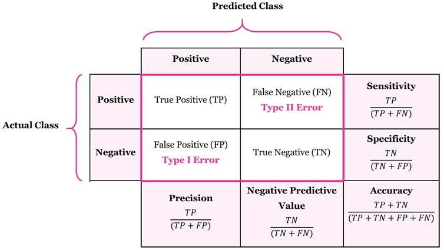
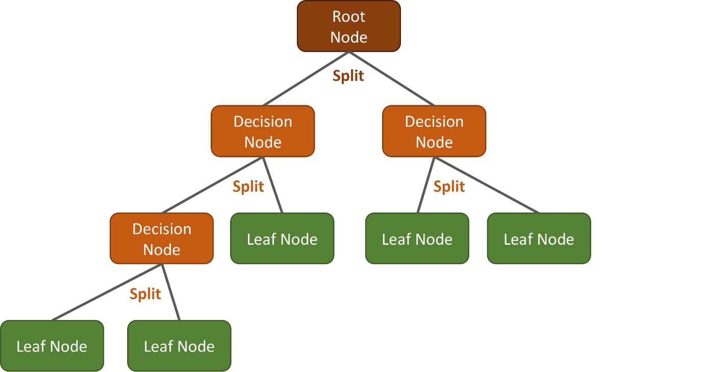
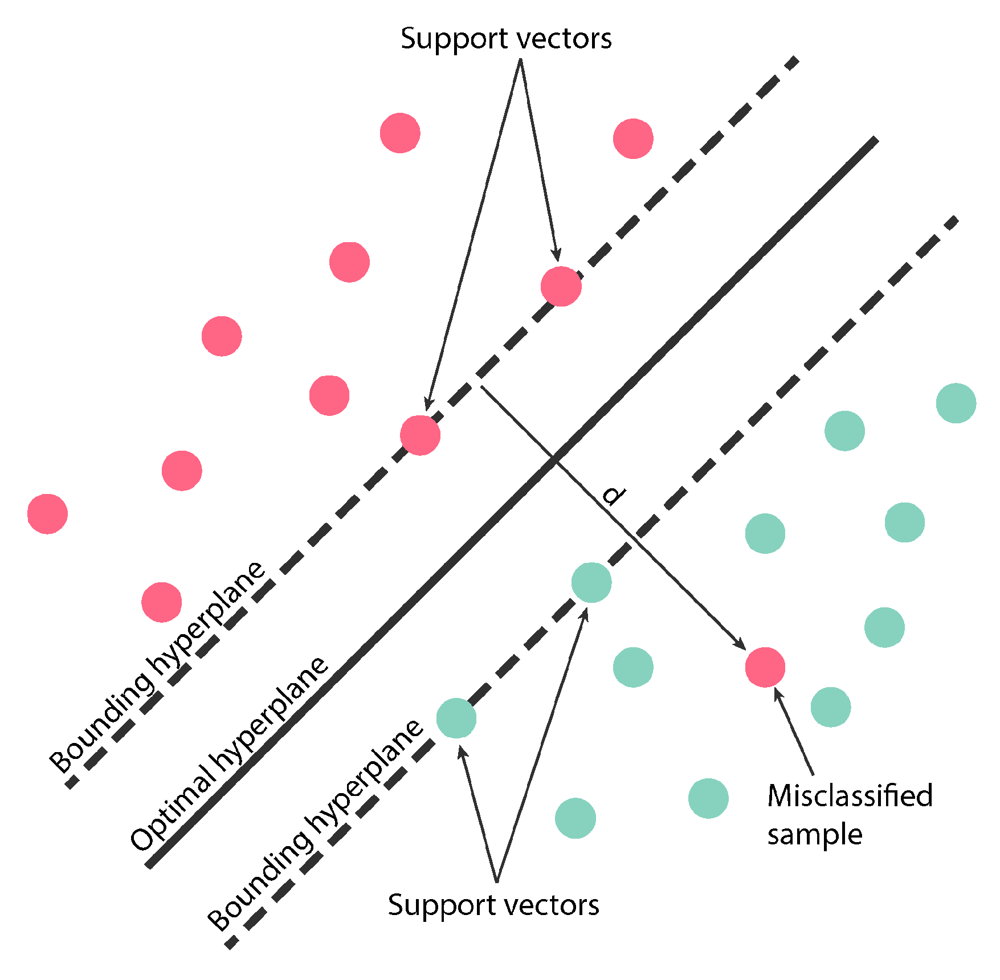
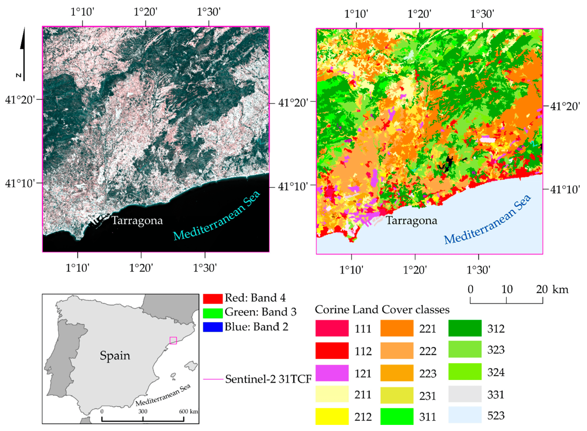
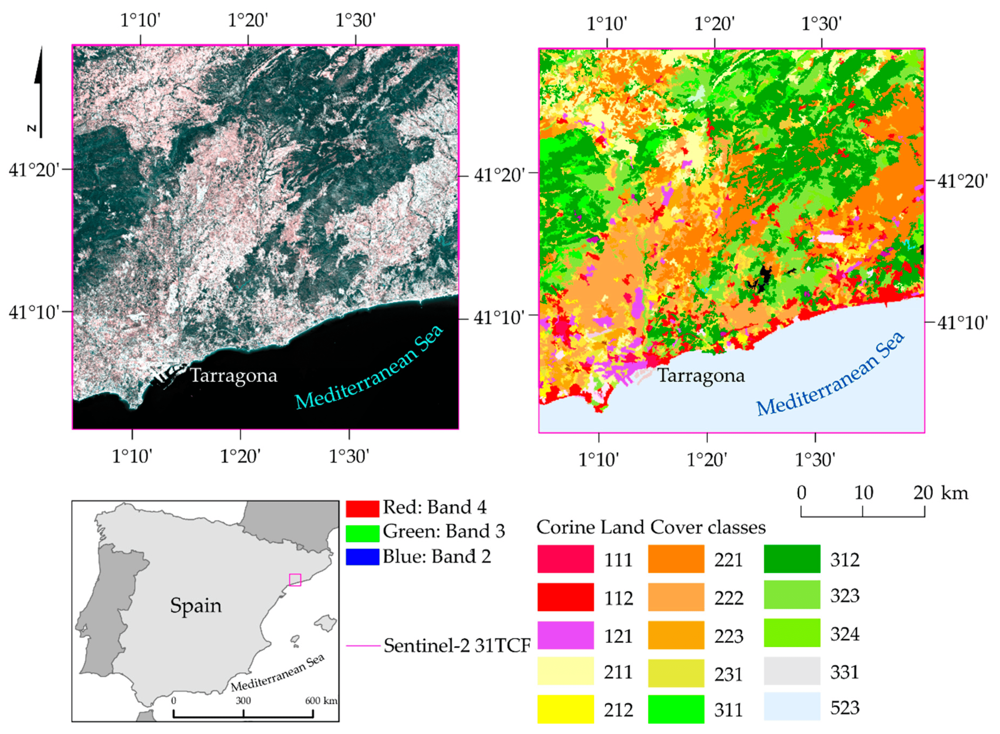

7 Week 7 - Classification II
7.1 Summary
covering sub-pixel classification, accuracy assessment and cross-validation.
7.1.1 Accuracy assessment
A Confusion Matrix is a fundamental tool for assessing the performance of classification models in machine learning and statistics. It provides a visual representation of the actual vs. predicted outcomes for a binary classifier, helping to understand how well the model performs in distinguishing between two classes (e.g., spam vs. non-spam in email filtering).
The confusion matrix consists of four key elements:
- True Positives (TP): Instances correctly predicted as positive (e.g., emails correctly identified as spam).
- False Negatives (FN): Positive instances incorrectly predicted as negative (e.g., spam emails misclassified as non-spam).
- False Positives (FP): Negative instances incorrectly predicted as positive (e.g., non-spam emails misclassified as spam).
- True Negatives (TN): Instances correctly predicted as negative (e.g., non-spam emails correctly identified as non-spam).
Advanced classification metrics derived from the confusion matrix offer deeper insights into the model’s performance, including:

- Sensitivity (Recall or True Positive Rate): The proportion of actual positives correctly identified by the model. High sensitivity indicates the model is good at catching positive cases.
- Specificity (True Negative Rate): The proportion of actual negatives correctly identified, showing how well the model identifies negative cases.
- Precision: The proportion of positive identifications that were actually correct, highlighting the model’s accuracy in predicting positive classes.
- Accuracy: The overall proportion of correct predictions made out of all predictions, providing a general measure of the model’s performance.
- F1 Score: The harmonic mean of precision and recall, offering a balance between them and is particularly useful when the classes are imbalanced.
Accuracy Assessment refers to evaluating how accurately a model predicts outcomes across its entire set of predictions. In other words, checking how well a model can guess outcomes correctly among all its guesses. It looks not just at how many guesses are right (accuracy), but also at how the model balances detecting true positives versus true negatives, its precision, and more. These details are especially important when the data isn’t evenly distributed or when making different mistakes costs differently. This process helps in identifying the strengths and weaknesses of a model, guiding improvements and adjustments to enhance its predictive capabilities.
7.1.2 Classification and Regression Trees (CART)
A Decision Tree, also known as Classification and Regression Tree (CART), is a supervised learning algorithm.
A CART trains by splitting all available samples into homogeneous sub-groups of high purity based on a most significant feature. But one thing at a time…
A decision tree conceptionally consists of three elements:
- One Root Node: That is the starting point, which includes all training samples. A first split is done here.
- Multiple Decision Nodes: Those are nodes where further splits are done.
- Multiple Leaf (or Terminal) Nodes: Those are nodes where the assignments to the classes (e.g., urban, water, etc.) happens for classifications tasks (or the mean response of all observation in this node is calculated for regressions).

One of the advantages of CART is its interpretability. The decision tree can be visualized, which aids in understanding and interpreting the model. This is crucial when explaining the model’s findings to stakeholders or integrating expert knowledge into the classification process.
7.1.3 Random Forest
A random forest consists of a number of categorical decision trees, which can improve predictive performance and robustness. In the case of a Random Forest approach, the tree shown above would continue growing until almost all nodes contain only one class at a time. While that would most likely result in overfitting in a single DT, this effect is relativized by the majority vote in the end when using a RF.
7.1.4 Support Vector Machine (SVM)
A SVM is a powerful tool for highdimensional, linear and non-linear data science problems. It is always a good choice to consider a SVM for classification and regression tasks due to its high customizability and settings options. However, the search procedure for critical parameter is more complex compared to the RF.
SVM constructs one or more hyperplanes in high-dimensional or infinite-dimensional space, such as the 11 spectral bands of a Landsat 8 scene, to distinguish between two classes. The goal of maximizing the margin between the hyperplane and the nearest training samples, known as Support Vectors. These vectors are crucial as they precisely define the hyperplane, while samples further away do not influence its position. Thus enhance the accuracy of classification.



Left: A linear hyperplane separating two classes (blue and green dots) in a two-dimensional feature space, e.g., Landsat bands 3 and 4. Right: Non-linear hyperplane after inverse transformation from higher dimensionality separating two classes. Source: FU Berlin, RESEDA)
7.2 Applications
In the realm of remote sensing and Earth observation, the journey from theoretical methodologies to real-world applications showcases not only the evolution of technology but also a collaborative dialogue between various studies.
The comparison of classification algorithms by Pal & Mather (2005), which illustrates the superior accuracy of SVM over Maximum Likelihood and Artificial Neural Network (ANN) classifiers. This study underscores the importance of algorithm choice in achieving high precision in land cover classification, setting the stage for further advancements in the field.
Building on this, Xu et al. (2023) introduce a pioneering approach with their multi-source unsupervised domain adaptive (MUDA) algorithm, addressing the intricacies of edge ambiguity in hyperspectral image classification. This innovative method not only exemplifies the ongoing refinement of classification techniques but also highlights a shift towards handling more complex, multi-source data—a commonality shared with Piramanayagam et al. (2018), who leverage deep learning for multisensor image classification. Both studies emphasize the trend towards integrating diverse data sources, reflecting a broader movement in remote sensing towards more holistic and comprehensive environmental analyses.
I focused on the introduction of Support Vector Machines and Random Forests in the knowledge overview. I found a very interesting article about the comparison between the two in land cover mapping (Dabija et al., 2021). Focusing on Sentinel-2 and Landsat 8 satellite data, the results show that SVM with radial core is superior to RF in classification accuracy. This is consistent with Pal & Mather’s (2005) proof that SVM is one of the best classification algorithms in remote sensing.
 


Zhao et al. (2019)’s development of an improved spectral clustering method for hyperspectral images without requiring prior information mirrors a shared challenge in the field: the need for efficient and effective classification techniques that can adapt to large-scale data without extensive pre-existing datasets. This resonates with the motivations behind the K-means clustering application by Xie & Yu (2008), where the focus on unsupervised classification for ecological zoning also taps into the need for adaptable and accessible remote sensing tools.
Moreover, the successful differentiation of crop species using SVM by Mountrakis & Ogole (2011) and land cover identification through maximum likelihood classification by Lu & Weng (2007) bring to light the practical implications of these technologies. These applications not only demonstrate the versatility of classification techniques across different environmental and agricultural contexts but also underscore a common goal: enhancing the accuracy and efficiency of land cover classification to support sustainable management practices.
7.3 Reflection
This week’s exploration of remote sensing image classification introduced me to the ability of machine learning (ML) to discriminately interpret the Earth’s surface from satellite imagery. I learnt about ML techniques such as CART, RF, ML, SVM, and etc. and practised the difference between supervised and unsupervised learning. To be honest, I was initially sceptical about the accuracy of the algorithms in classifying images compared to the human eye, but was later surprised to find out that the algorithms were able to skilfully classify image segments, which piqued my curiosity and I decided to practice to bring the theoretical concepts into reality. The practical exercise with the Random Forest Model and its output provided a clear, insightful glimpse into the complex world of remote sensing data analysis. I continue to marvel at how advances in satellite imagery and computing are revolutionising our understanding of the Earth’s surface and am looking forward to learning more advanced classification techniques next week.